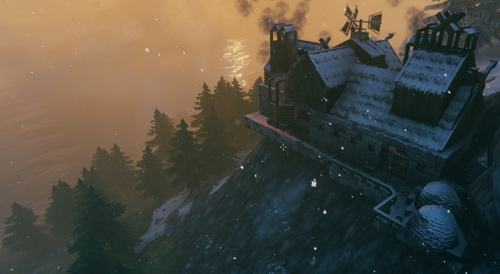
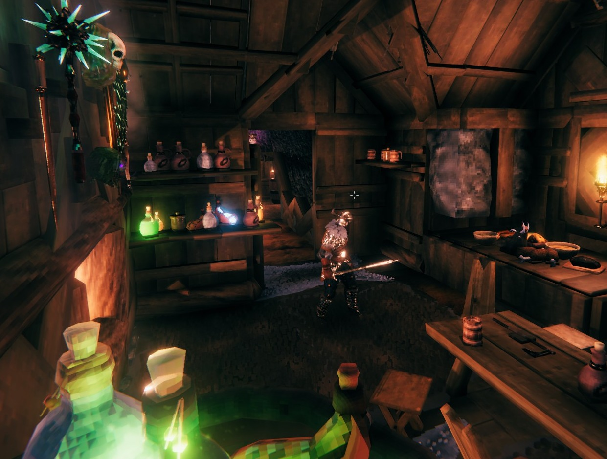
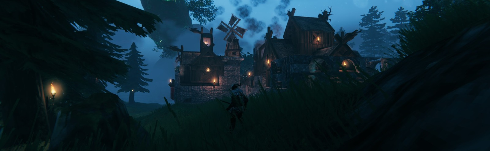
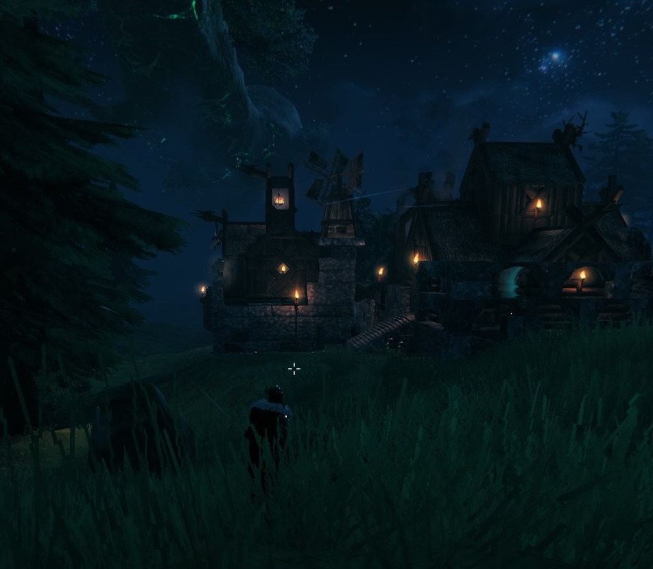
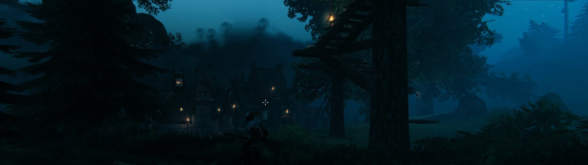
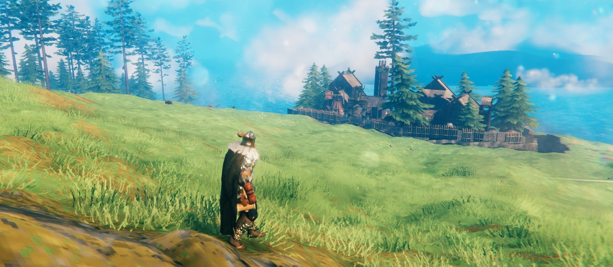
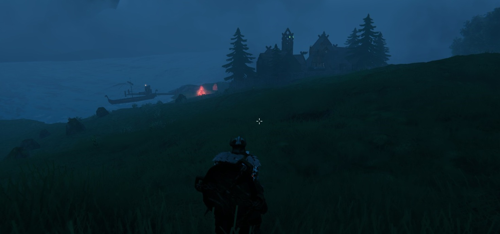
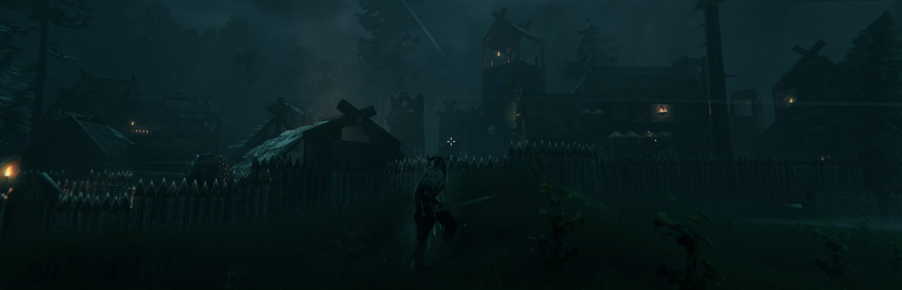

Çağlayan Demirci . Personal Page
cademirci
*
Gallery
Some graphics.
I like to draw wraiths, ghosts and some dark characters without face, but also like to make them cute. I think this kind of contrast is one way of making good art. For instance I appreciate Hollow Knight designs in the same way. This is my fourth painting via Adobe Illustrator.

Hello world! I have drawn myself vie Adobe Illustrator. I am proud, people do it by some profile picture generator programs. But mine is mine art by every single pixel.
Some minimal/cartoon working tools with a German cathcphrase, means "If you do not leave your comfort zone, you achieve nothing.".

I am learning Adobe Illustrator. I am regretful that I have not begin it before. This is my first drawing with it, since shaman is a very important fantasy image for me and also one of my niknames.
I have designed this logo for my radio show, it was a rock music program. The grey man is not Gandalf (most of the people think that), but exactly the inspiration of Gandalf; he is Odin. The bird is a raven, it is either Huginn or Muninn. Besides I used three snowflake/hexagons within the 'A' letters. They stand for north and winter culture, those things I love :)

Since "I like to design and build things" is the header catchphrase of my page, I fell in love with one of the most beautiful games of last years; Valheim. I am putting some screenshots from that game; some houses, rooms and strongholds I've built with my character.
       
I took this photo when I took a walk on a snowy day. On the background the finance center / urban area of my city in the snow fog, barely seen. This photo was taken in the pandemic times.
Did I mention that I like coffee?
A photo from my city with a beautiful orange skyline.
I have painted that for this page. For "painting and photo" themselves.
A digital painting I made for my website (home page). May be I could draw the coffe cup a little bigger. Besides I have drawn the linear graphic waves manually, therefore they aren't sharp enough. Plus, the beaker would be prettier and code lines a bit longer. Gradient from blue-gray to purple-gray stands for "serious business".
Ditto for the site (blog page). This is one of my favourites, because it is simple and cute. Especially I like my ink bottle and the feather pen. Graphics and papers additionally, are representing a blog post in a cute and freestyle way. Gradient from brown to gray stands for library-style archiving.
Designed and coded my own open source website under
2018 - 2021 GitHub. Feel free to inspect.

Çağlayan Demirci